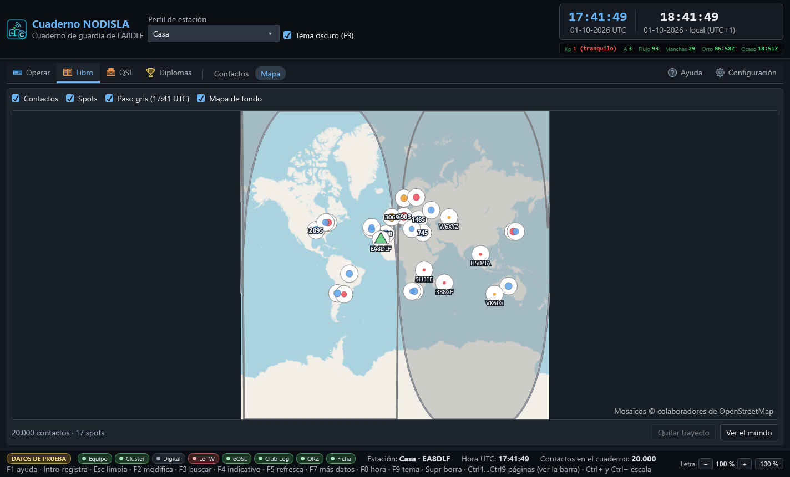

Mapa
Libro › Mapa (Ctrl 4) enseña dónde están los contactos del cuaderno y los anuncios del cluster, con la propia estación marcada con un triángulo verde.


Qué se ve
Cuatro casillas arriba controlan qué se dibuja:
- Contactos — los contactos del cuaderno, agrupados en globos cuando hay varios muy juntos; el número dentro del globo dice cuántos.
- Spots — los anuncios que llegan ahora mismo del cluster de DX.
- Paso gris — la línea de día y noche, que se mueve sola con el reloj y enseña la hora a la que corresponde.
- Mapa de fondo — los mosaicos de OpenStreetMap. Sin conexión a internet el mapa se queda en un fondo liso y sigue funcionando igual de bien para ver posiciones y trayectos.
Trayectos
Al elegir un spot o un contacto se traza el trayecto de círculo máximo entre la propia estación y esa estación. «Quitar trayecto» lo borra; «Ver el mundo» vuelve a encuadrar el mapa entero, para cuando el zoom se ha quedado metido en una zona.
El resumen de abajo dice cuántos contactos y cuántos spots hay dibujados en ese momento, y avisa si el mapa está todavía cargando el cuaderno o si algo ha fallado al traer los mosaicos.
Rendimiento de las teselas
El control de mapa es su propio proyecto, separado de la ventana principal, precisamente porque los controles de mapa son la pieza que más se rompe entre versiones de sus bibliotecas: si algún día hay que cambiarlo, no hace falta tocar el resto del programa. Las teselas se guardan en caché en disco, así que no hace falta descargarlas de nuevo cada vez que se abre el mapa.